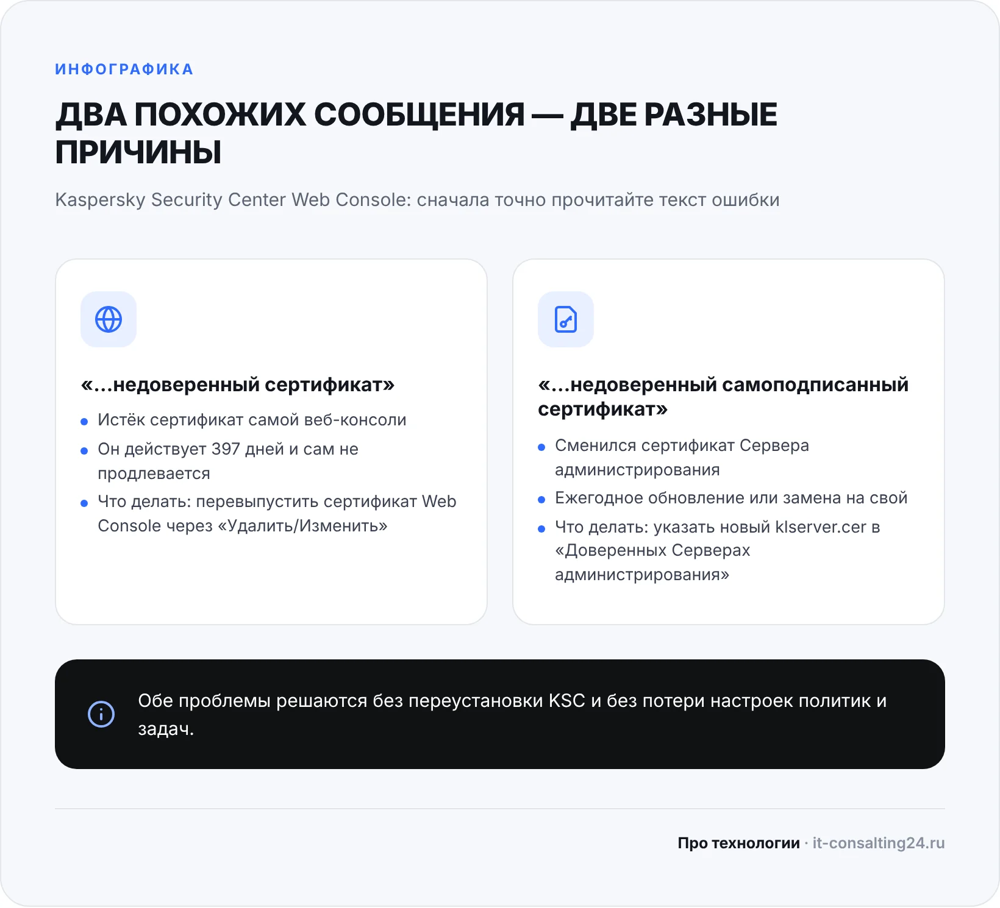
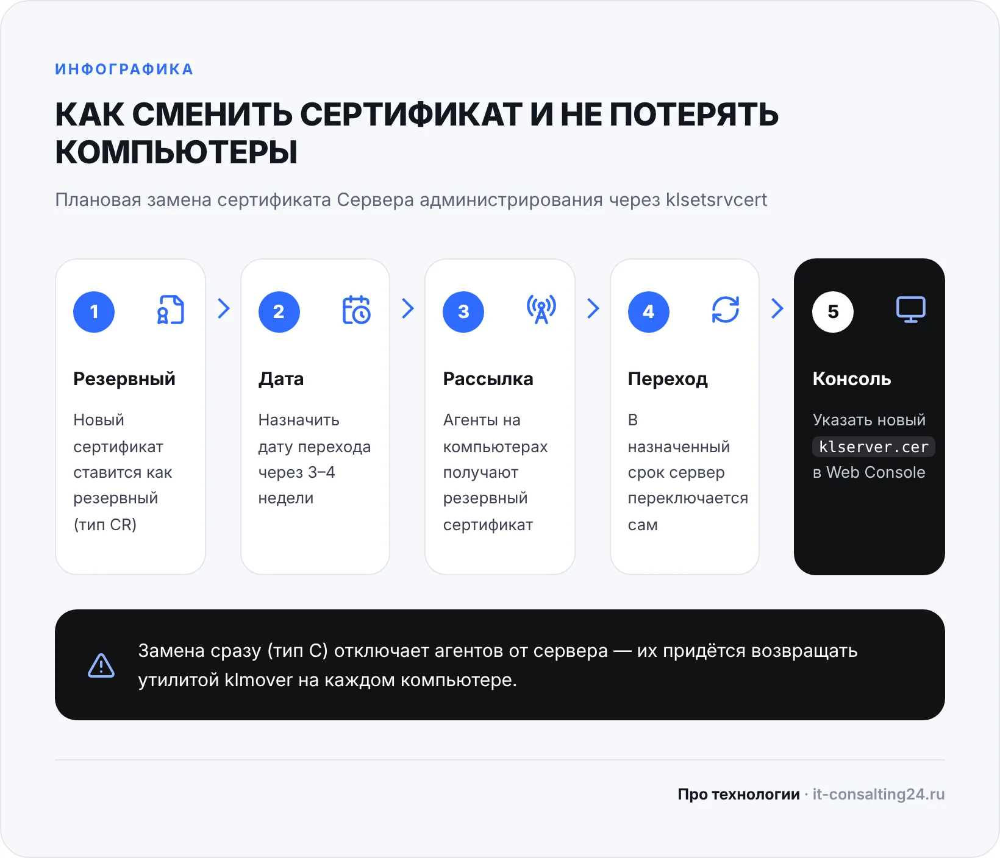

Сообщение «Сервер администрирования использует недоверенный сертификат» появляется при входе в Kaspersky Security Center Web Console — веб-консоль, через которую администратор управляет антивирусом на всех компьютерах офиса. Чаще всего это случается внезапно: вчера консоль открывалась, а сегодня вместо списка устройств — ошибка. Сам антивирус на компьютерах при этом продолжает работать, но управлять им, смотреть отчёты и раздавать задачи уже нельзя.
Хорошая новость: в большинстве случаев причина в сроке действия или смене сертификата, а не в поломке сервера. Ниже разберём, почему возникает ошибка, чем отличаются два похожих сообщения, как исправить каждое и как сменить сертификат так, чтобы компьютеры не «отвалились» от сервера.
Что означает «Сервер администрирования использует недоверенный сертификат»
Kaspersky Security Center (KSC) состоит из нескольких частей. Сервер администрирования хранит политики, задачи и сведения обо всех защищаемых компьютерах. Агенты администрирования на рабочих местах регулярно связываются с ним. Web Console — это отдельный веб-сервис, через который администратор открывает управление в браузере.
Все эти части общаются по защищённому соединению, и каждая сторона проверяет сертификат собеседника. Сертификат — это электронный «паспорт» сервера. Веб-консоль запоминает, какой сертификат был у Сервера администрирования при установке, и сравнивает его при каждом подключении. Если «паспорт» поменялся или истёк, консоль считает сервер недоверенным и отказывается с ним работать. Это защитный механизм: так нельзя подменить сервер управления антивирусом поддельным.
Поэтому сообщение о недоверенном сертификате почти всегда означает одно из трёх:
- закончился срок действия сертификата самой веб-консоли;
- сертификат Сервера администрирования обновился (плановое ежегодное обновление или замена на собственный сертификат компании), а веб-консоль по-прежнему ждёт старый;
- консоль подключается не к тому серверу, к которому была настроена, — например, после переноса KSC на другую машину.
Два похожих сообщения — две разные причины
Первое, что нужно сделать, — внимательно прочитать текст ошибки целиком. По документации «Лаборатории Касперского» у веб-консоли есть два очень похожих сообщения, и лечатся они по-разному.
«Сервер администрирования использует недоверенный сертификат». Проблема в сертификате самой Web Console. Он выпускается на 397 дней — это предел, который допускают современные браузеры. Сервер администрирования не продлевает его автоматически, поэтому примерно через год после установки или последнего перевыпуска консоль перестаёт открываться.
«Сервер администрирования использует недоверенный самоподписанный сертификат». Здесь дело в сертификате Сервера администрирования. Он сменился — после ежегодного обновления или после того, как его заменили на собственный сертификат организации, — а в настройках веб-консоли остался старый файл.

Перед любыми действиями сделайте две простые вещи: сохраните резервную копию Сервера администрирования (если её регулярно не делает задача KSC) и выясните, менял ли кто-то сертификаты в последнее время. Если работу ведёт подрядчик — спросите его: часто ошибка появляется сразу после того, как сертификат заменили, но веб-консоль забыли перенастроить.
Вариант 1: перевыпустить сертификат Web Console
Этот способ подходит, если сервер администрирования использует недоверенный сертификат, но в сообщении нет слова «самоподписанный». Выполняется на компьютере, где установлена Kaspersky Security Center Web Console, под учётной записью администратора:
- Откройте «Программы и компоненты» — например, нажмите Win+R и выполните
appwiz.cpl. - Выберите в списке Kaspersky Security Center Web Console и нажмите «Удалить/Изменить».
- Выберите язык и вариант перевыпуска сертификата.
- Дождитесь окончания процесса и нажмите «Готово».
- Обновите страницу в браузере и снова войдите в консоль.
Если после перевыпуска ошибка осталась, в том же мастере можно выбрать восстановление Web Console, а в крайнем случае — удалить и заново установить веб-консоль. Политики, задачи и список компьютеров хранятся на Сервере администрирования, поэтому переустановка самой веб-консоли их не затрагивает.
Отметьте в календаре дату через год: сертификат веб-консоли снова закончится, и проще перевыпустить его заранее, чем разбираться с ошибкой в день, когда срочно нужно проверить заражённый компьютер.
Вариант 2: указать новый сертификат Сервера администрирования
Если в тексте ошибки есть слово «самоподписанный», веб-консоли нужно «показать» новый сертификат сервера. Он хранится на Сервере администрирования в файле:
C:\ProgramData\KasperskyLab\adminkit\1093\cert\klserver.cerПорядок действий:
- Если веб-консоль стоит на другом компьютере, скопируйте на него файл
klserver.cerс Сервера администрирования. - На компьютере с Web Console откройте
appwiz.cpl, выберите Kaspersky Security Center Web Console и нажмите «Удалить/Изменить». - Выберите «Изменить параметры подключения» и нажимайте «Далее», пока не дойдёте до окна «Доверенные Серверы администрирования».
- Выделите нужный сервер, нажмите «Изменить» и укажите путь к новому файлу
klserver.cer. - Подтвердите изменения, пройдите мастер до конца, нажмите «Изменить» и «Готово».
При повторной настройке веб-консоль перечитывает сертификат, и подключение восстанавливается. Если серверов несколько (например, главный и подчинённый), сертификат указывается для каждого, к которому подключается консоль.
В классической консоли администрирования (MMC) похожая ситуация выглядит иначе: при подключении она предупреждает, что сертификат Сервера администрирования не совпадает с сохранённым, и предлагает получить сертификат с сервера или указать файл. Если вы точно знаете, что сертификат меняли сами, укажите тот же klserver.cer. Если никто ничего не менял — не подтверждайте подключение вслепую, а сначала выясните, к какому серверу вы подключаетесь.
Когда дело не в сертификате
Иногда сообщение о сертификате сопровождается другими ошибками или консоль не открывается совсем. Тогда стоит проверить ещё несколько вещей:
- Версии. Версия Web Console не должна быть ниже версии Сервера администрирования. После обновления KSC веб-консоль обновляют следующей.
- Порты. Веб-консоль по умолчанию принимает подключения на порту 8080, и его не должна занимать другая служба. Агенты связываются с сервером по портам 13000 и 13291 — их нельзя закрывать брандмауэром.
- Учётная запись. Если появляется ошибка аутентификации, проверьте, не заблокирована ли учётная запись и не истёк ли её пароль.
- Служба сервера. Убедитесь, что служба Сервера администрирования запущена, а сервер не перегружен и на диске есть место.
Как сменить сертификат сервера и не потерять компьютеры
Самая неприятная ситуация — не ошибка в консоли, а массовая потеря связи с компьютерами после смены сертификата. Агенты администрирования доверяют старому сертификату сервера. Если заменить его сразу, агенты перестанут подключаться, и каждый компьютер придётся возвращать вручную утилитой klmover или переустановкой агента.
Чтобы этого не случилось, «Лаборатория Касперского» рекомендует менять сертификат в два этапа с помощью утилиты klsetsrvcert, которая входит в дистрибутив KSC:
- Установить новый сертификат как резервный (тип
CR). Свой сертификат подаётся в контейнере PKCS#12 (.p12 или .pfx) с паролем. - Дождаться, пока служба Сервера администрирования полностью запустится, и отдельной командой назначить дату перехода (параметр
-f) — через 3–4 недели. - За это время агенты на компьютерах получают резервный сертификат.
- В назначенный срок сервер переключается на новый сертификат, и агенты остаются на связи.
- После перехода указать новый
klserver.cerв Web Console, как описано выше.

Команды -t CR и -f не стоит объединять в одну строку: на форуме поддержки «Лаборатории Касперского» описано, что в этом случае возникает ошибка соединения. Точный синтаксис для вашей версии сверяйте со справкой KSC — параметры утилиты отличаются в разных версиях.
Таблица: проблема → причина → что сделать
| Что видите | Вероятная причина | Что сделать |
|---|---|---|
| «…использует недоверенный сертификат» | Истёк сертификат Web Console (397 дней) | Перевыпустить сертификат через «Удалить/Изменить» Web Console |
| «…использует недоверенный самоподписанный сертификат» | Сменился сертификат Сервера администрирования | Указать новый klserver.cer в «Доверенных Серверах администрирования» |
| Ошибка сразу после обновления KSC | Web Console старее сервера или не перенастроена | Обновить Web Console, затем указать актуальный сертификат |
| Консоль MMC предупреждает о сертификате | Сертификат сервера отличается от сохранённого | Если меняли сами — указать klserver.cer; если нет — выяснить причину |
| Компьютеры перестали подключаться к серверу | Сертификат заменили сразу, без резервного | Вернуть агентов утилитой klmover, впредь менять через тип CR |
| Консоль не открывается вообще | Занят порт 8080 или остановлена служба | Проверить порты, службы и свободное место на сервере |
Чек-лист: как не встретить эту ошибку снова
- Записать даты окончания сертификата Web Console и Сервера администрирования и поставить напоминание за месяц.
- Перевыпускать сертификат веб-консоли заранее, а не после того, как она перестала открываться.
- Менять сертификат сервера только через резервный (тип CR) с запасом в 3–4 недели.
- Обновлять Web Console вместе с Сервером администрирования.
- Настроить регулярное резервное копирование Сервера администрирования.
- Держать в документации, кто и когда менял сертификаты и где лежат файлы.
- Раз в месяц проверять в консоли, все ли компьютеры на связи и у всех ли актуальные базы.
Типичные ошибки при исправлении
- Переустанавливать весь Kaspersky Security Center. Это долго и рискованно: можно потерять политики и связь с агентами. Для этой ошибки достаточно перенастроить веб-консоль.
- Менять сертификат сервера «сразу». Самый частый путь к ситуации, когда половина компьютеров пропала из консоли.
- Брать старый файл klserver.cer. Если сертификат обновлялся, файл нужно скопировать заново, а не взять из прошлогодней папки.
- Нажимать «Принять» не глядя. Предупреждение о сертификате — защитный механизм. Если никто ничего не менял, это повод разобраться, а не закрыть окно.
Когда звать специалиста
Перенастроить Web Console администратор может за несколько минут. Помощь нужна, если компьютеры уже потеряли связь с сервером, если KSC переносили на другую машину, если используется собственный сертификат организации или если в сети несколько Серверов администрирования. Ошибки в этих случаях оборачиваются тем, что антивирус на рабочих местах остаётся без управления и обновлений политик.
Мы обслуживаем серверы и рабочие места компаний в Оренбурге: администрируем серверы, следим за антивирусной защитой и обслуживаем компьютеры. Разовый вызов — от 1 500 ₽, диагностика бесплатно. Если нужен постоянный присмотр за ИТ, подойдёт ИТ-аутсорсинг от 15 000 ₽/мес — тогда сроки сертификатов, обновления и резервные копии отслеживаем мы.
Частые вопросы
Перестанет ли работать антивирус на компьютерах из-за этой ошибки?
Нет. Ошибка в веб-консоли означает, что вы не можете управлять защитой, но антивирус на рабочих местах продолжает работать с последними полученными настройками. Затягивать с исправлением всё же не стоит: без консоли вы не увидите заражений и не раздадите новые задачи.
Где взять файл klserver.cer?
На Сервере администрирования в папке C:\ProgramData\KasperskyLab\adminkit\1093\cert\. Папка ProgramData скрыта, поэтому путь удобнее вставить в адресную строку проводника.
Как часто нужно обновлять сертификат Web Console?
Сертификат веб-консоли действует 397 дней и автоматически не продлевается. Перевыпускайте его примерно раз в год, заранее, по напоминанию.
Можно ли просто переустановить веб-консоль?
Можно: настройки и список компьютеров хранятся на Сервере администрирования, а не в Web Console. Но обычно хватает перевыпуска сертификата или изменения параметров подключения — это быстрее.
Что делать, если после замены сертификата компьютеры пропали из консоли?
Агенты не получили новый сертификат и не могут подключиться к серверу. Их возвращают утилитой klmover или переустановкой агента администрирования. Если компьютеров много, лучше поручить это специалисту.